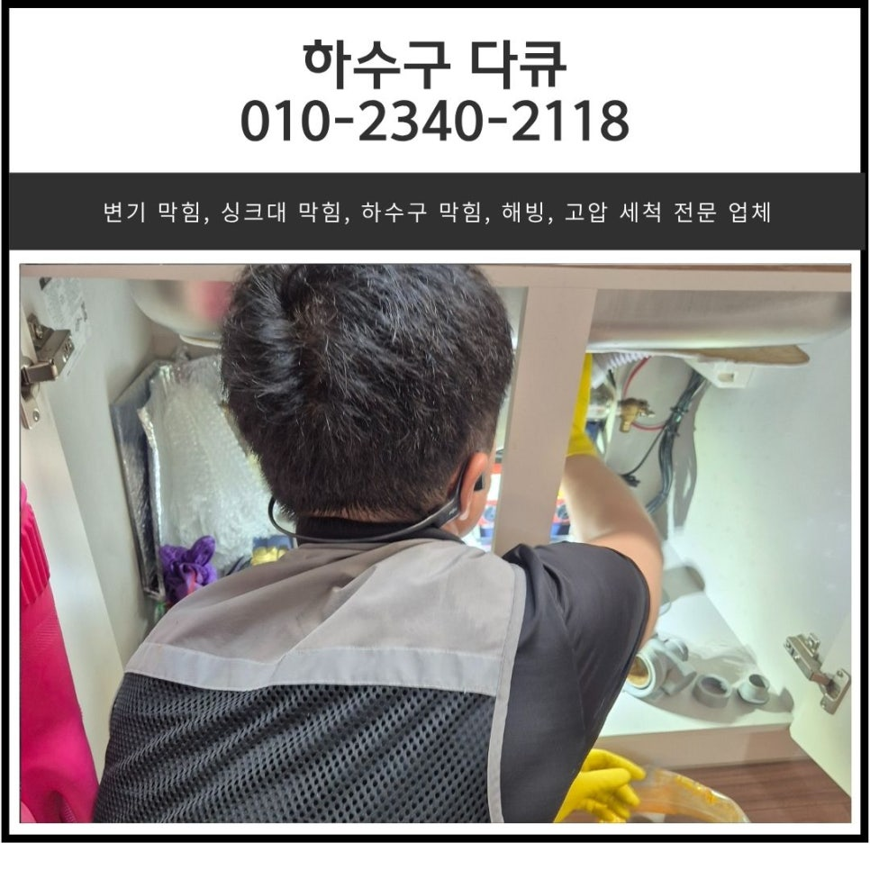
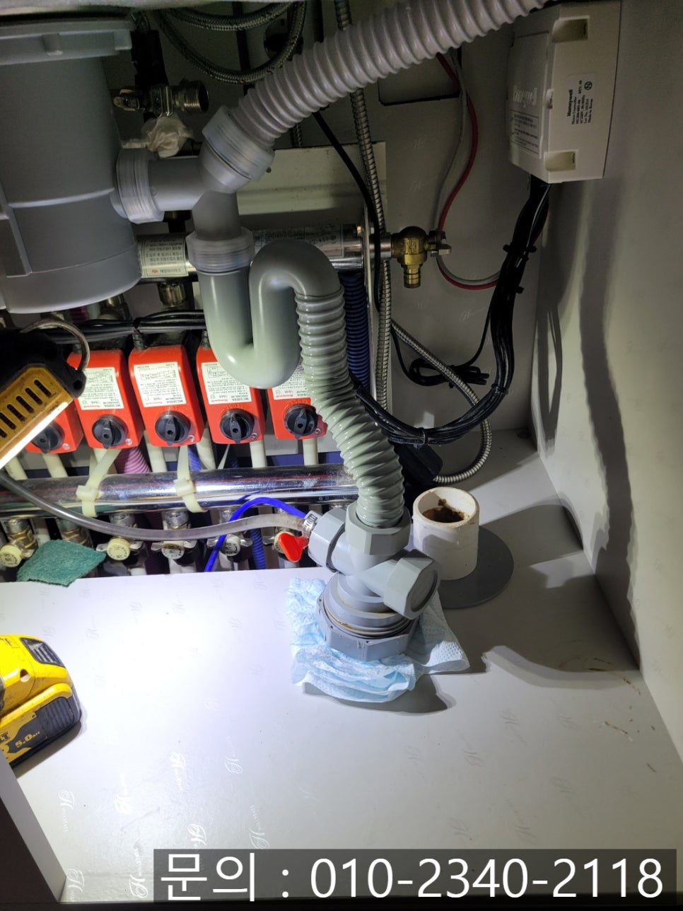
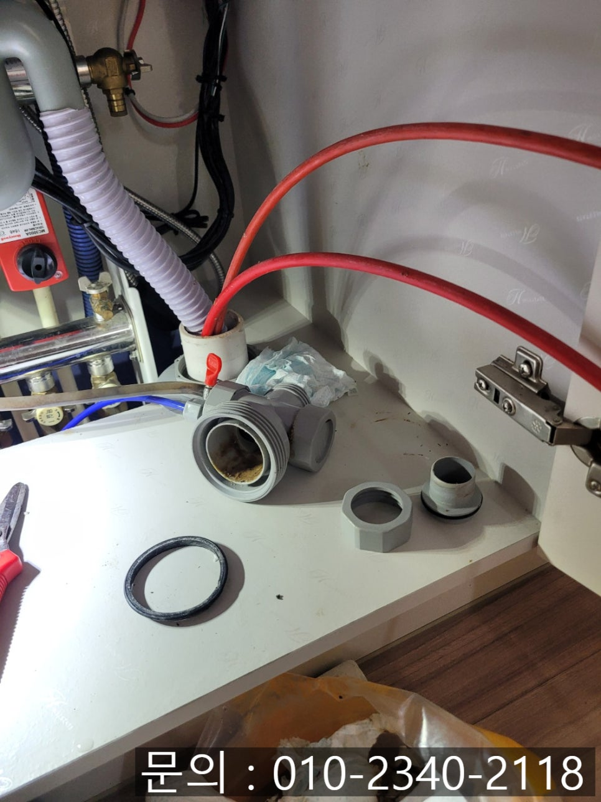
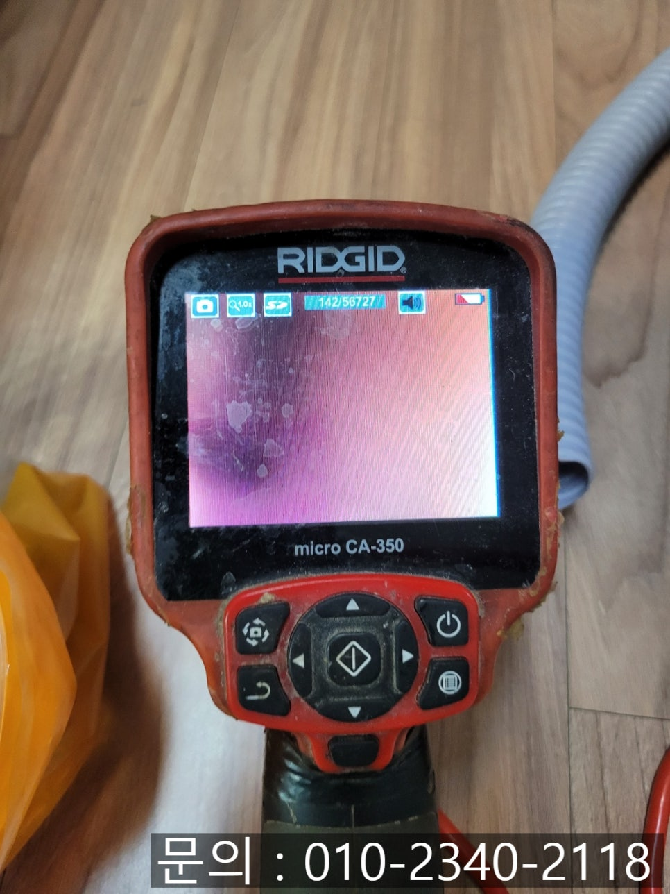
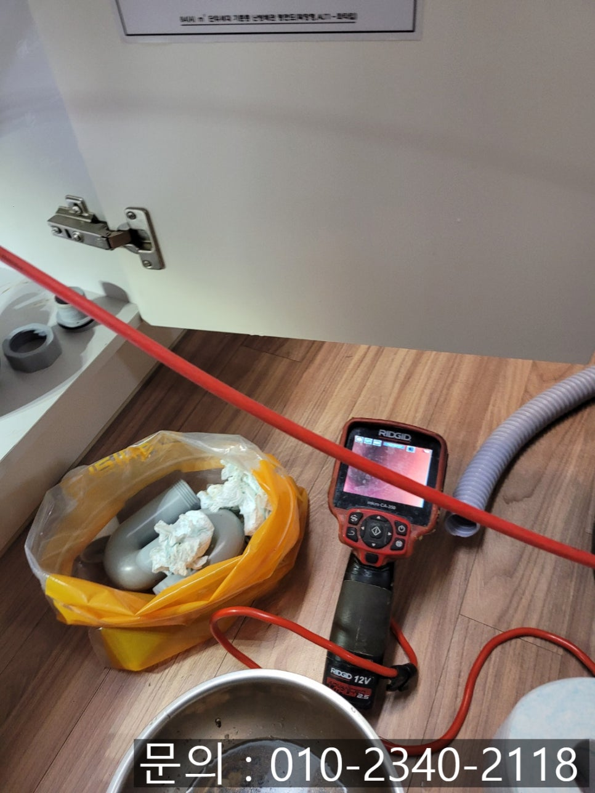
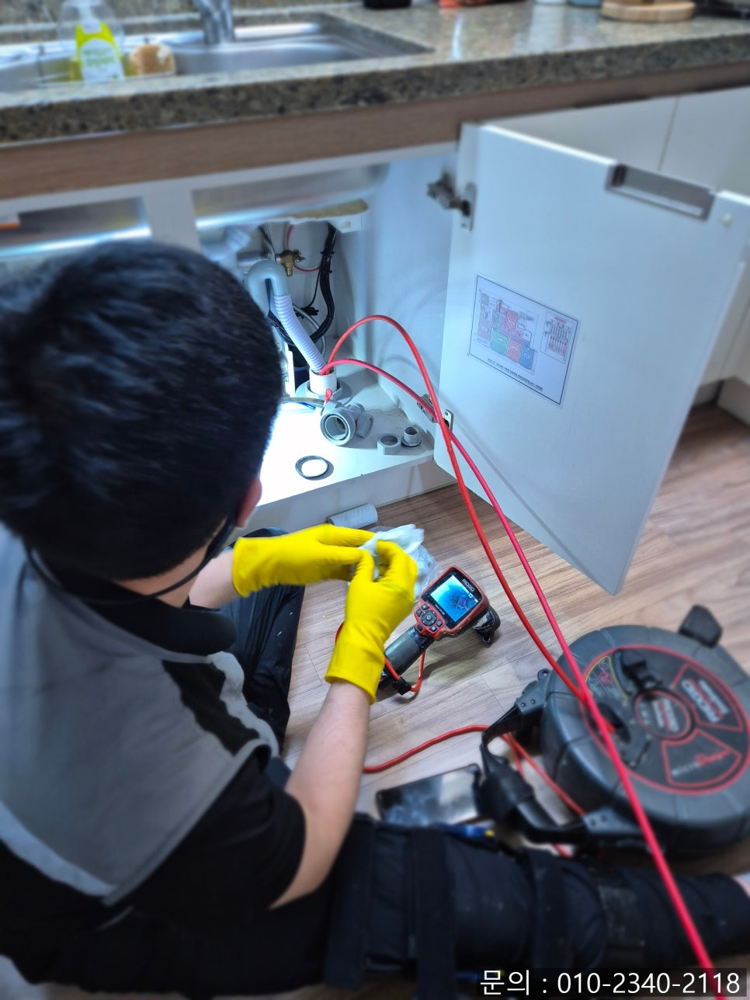
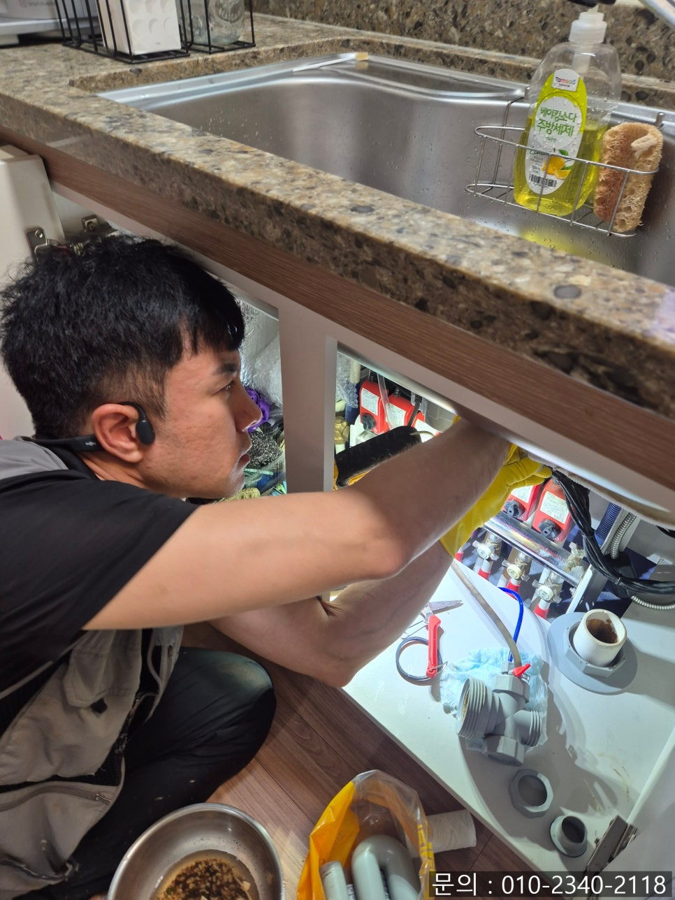

🏠 원동 싱크대 막힘 오산시 중앙동 아파트 하수구 역류 뚫는 방법
오산 원동 싱크대막힘 전문 시공 후기

📋 작업 개요
- 위치: 오산 원동, 원동, 오산
- 서비스 유형: 싱크대막힘, 하수구막힘, 배관막힘, 누수수리, 역류해결, 뚫는업체, 고압세척
- 작업 일시: 2025. 6. 21. 17:08
- 업체명: 하수구수사대 (010-5615-2118)
🔍 문제 상황
안녕하세요.
원동 싱크대 막힘, 오산시 중앙동 아파트 하수구 역류 뚫는 방법을 소개해 드릴 하수구 다큐입니다.
물은 우리가 일상에서 가장 자주 사용하는 자원 중 하나입니다. 특히 주방의 싱크대는 가족들의 식사를 책임지기 위해 더 자주 사용하게 되는데요.
갑자기 주방 싱크대에서 역류하거나, 바닥에서 역류하게 된다면 어떨까요?
싱크대를 사용하지 못함은 물론이고 악취 등으로 인해 생활에 큰 불편을 초래하게 됩니다.
오늘은 하수구 다큐가 원동 싱크대 막힘으로 다녀온 현장 사례를 바탕으로 문제의 원인과 해결 방법에 대해 알려드릴게요.

🔎 원인 분석
💡 전문가 진단: 현장 점검
현장 점검
오산시 원동에 위치한 아파트에 거주하시는 고객님께서 싱크대에서 사용한 물이 잘 빠지지 않는다고 예약을 해주셨습니다.
하지만 잠시 후 물이 다 빠졌다며 예약을 취소하시길래, 배관 내부에 이물질로 인해 막힘이 발생하고 있는 것 같으니 다시 문제가 생기면 연락 달라고 말씀드리고 전화를 끊었어요.
그로부터 며칠 후 같은 고객님께 다시 전화를 받았습니다.
이번에는 물이 싱크대로 역류한다고 빨리 와서 뚫어달라고 하셨어요.
다행히 다른 현장에서 작업이 끝나고 정리하고 있었던 터라 고객님께 주소를 안내받아 30분 만에 도착할 수 있었어요.
원동 싱크대 막힘 현장에 기본적인 장비를 세팅하고 외부를 살펴본 다음, 정확한 막힘의 원인을 파악해 보기 위해 내시경 카메라를 진입시켜 점검해 보기로 했습니다.

🔧 작업 과정
내시경 카메라가 배관 내부로 진입하자 이물질이 가득 차있는 걸 확인할 수 있었어요.
특히 아파트같이 여러 세대가 거주하는 공동 주택은 한 라인으로 연결되어 있는 배관을 사용하기 때문에 위층에서 내려보낸 오수가 아래층 싱크대로 역류하는 현장이 자자 발생하기 때문에 주기적인 관리가 필요해요.
원동 싱크대 막힘의 원인으로는 식용유 등의 기름을 사용하고 난 뒤 그릇을 세척하는 과정에서 배관에 흘러들어가 배관에 붙어 슬러지가 되고 시간이 지날수록 좁아지게 될 뿐만 아니라 미세한 음식물 조각들이 흘러들어가 쌓이면서 물길을 막게 됩니다.
아무리 거름망을 사용하고 조심한다고 해도 오랜 시간 사용하게 되면 배관 내부에 쌓이면서 막힘이 발생할 수밖에 없어요.
원인을 파악했으니 오산시 중앙동 아파트 하수구 역류 뚫어야겠죠?
오산시 중앙동 아파트 하수구 역류 뚫는 방법으로 사용하게 될 장비는 플렉스 샤프트입니다.
사진으로 확인되는 것처럼 플렉스 샤프트 노즐 끝에 달려있는 체인이 배관 내부에서 360도로 회전하면서 이물질을 제거하는 역할을 합니다.
내시경 카메라로 막힌 부분을 확인해가며 이물질을 제거하는 작업을 이어갔어요.
여러 차례 반복적인 작업을 통해 쌓여있던 이물질을 모두 제거하고 깨끗해진 배관을 확인할 수 있었습니다.
빌라나 아파트 같은 공동 주택은 하수구 막힘 문제를 방치하게 되면 아래층으로 누수까지 이어져 더 큰 문제로 발생할 수 있는 만큼 문제가 발생하면 지체 없이 전문가의 도움을 받는 것이 가장 현명한 방법입니다.


✅ 작업 완료
지금 싱크대 막힘으로 고민하고 계신다면 연락 주세요.
시원하게 뚫어드리겠습니다.
경기도 오산시 오산로160번길 15 201-L16호




⚠️ 베란다 누수 및 방수 관리 방법
- ✅ 비가 많이 올 때 창틀 주변이나 아래층 천장에 얼룩이 생기는지 정기적으로 확인해 보세요.
- ✅ 우수관 주변 실리콘 마감이 들뜨거나 깨진 틈새가 있는지 손상 여부를 수시로 체크하세요.
- ✅ 베란다 바닥 타일의 줄눈(메지)이 소실되면 그 틈으로 물이 침투하여 누수가 유발됩니다.
- ✅ 누수 의심 증상 발견 시 방치하면 아래층 손실이 커지므로 즉시 전문가의 진단을 받으십시오.
💡 핵심 정리
- 확실한 장비 작업(내시경 점검 및 샤프트 스케일링)으로 원인을 뿌리 뽑습니다.
- 작업 후 1년 이내에 동일한 부위 재발 시 100% 무상 A/S 서비스를 보장합니다.
- 서울 · 경기 · 인천 전 지역에 24시간 언제든 긴급 출동할 수 있도록 항시 대기 중입니다.
❓ 자주 묻는 질문 (FAQ)
🚨 오산 원동 싱크대막힘 문제로 고민이신가요?
정확한 원인 진단과 확실한 시공으로 재발 없는 해결을 약속드립니다.
24시간 긴급 출동 | 서울 · 경기 · 인천 전지역 | 1년 내 재발 시 무상 A/S